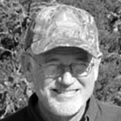
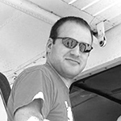
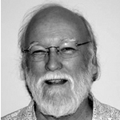

CSS Announces Fall 2015 Brown Bag Lecture Series
Join CSS for our Fall 2015 Brown Bag Lecture Series – OPEN TO ALL! Speakers from the worlds of design, science, and engineering visit LSU to share their thoughts and ideas and encourage debate on a wide range of coastal topics. Bring your lunch, grab a seat, and enjoy the lively discussion.
“Estuarine Sculpturing with Induced Oyster Reefs”
Click here to watch Woody Gagliano’s full lecture
Sherwood “Woody” Gagliano
CEO
Coastal Environments, Inc.
Thursday, Sept 24 Noon-1:00pm 215 Design Building
Sherwood “Woody” Gagliano founded Coastal Environments, Inc. after serving for 12 years on the faculty of the Coastal Studies Institute and the Departments of Geography and Marine Sciences at LSU. Dr. Gagliano served as management advisor and consultant to various owners of large, lowland properties in coastal Louisiana, and several federal and state agencies. He conducted fieldwork on coastal and riverine geology, physical processes, and archaeology along several coasts around the world. Dr. Gagliano is one of Louisiana’s foremost experts on deltaic, river and coastal processes, and is one of the principal authors of Louisiana’s Coast 2050 restoration plan. He continues to work with state and federal agencies on designs and plans for the implementation of large-scale coastal restoration measures. He uses his research and knowledge to fashion viable land use and renewable resource management approaches which are deeply embedded in Louisiana’s coastal management and restoration program.
“Designing the Balance: Culture, Ecology and Performance from Urban Parks to Rural Landscapes”
Thomas Woltz
Principal & Owner
Nelson Byrd Woltz Landscape Architects
Friday, Oct 9 5:30pm-6:30pm 103 Design Building
Co-sponsored with the Robert Reich School of Landscape Architecture
Thomas Woltz is the principal and owner of Nelson Byrd Woltz Landscape Architects (NBW) with offices in New York City, and Charlottesville VA. In 2011, he was invested into the American Society of Landscape Architects Council of Fellows, among the highest honors achieved in the profession, and in 2013 he was named Design Innovator of the Year by the Wall Street Journal.
During the past 19 years of practice, Woltz and his firm have achieved a body of work that integrates the beauty and function of built form and craftsmanship with an understanding of complex biological systems, and has yielded hundreds of acres of reconstructed wetlands, reforested land, native meadows, and flourishing wildlife habitat. NBW’s designs reveal narratives of the land in places where people live, work, and play creating a sense of connection and inspiring stewardship. Current NBW projects include Houston’s Memorial Park, Centennial Park in Nashville, and the Hudson Yards East landscape in Manhattan. Woltz was educated at the University of Virginia in the fields of architecture, landscape architecture, fine art, and architectural history. He holds master’s degrees in Landscape Architecture and Architecture.
David Muth
Director, Gulf Restoration Program
National Wildlife Federation & Restore the Mississippi River Delta
RESCHEDULED TO SPRING 2016
DATE: TBD
David Muth is a New Orleans native who has spent a lifetime in the Mississippi River delta and on the Gulf coast, studying its geology, ecology, plants, wildlife, history and culture. He took his degree in history at University of New Orleans and became professionally interested in the connection between culture and environment in the context of the delta. He worked for 30 years with the National Park Service at Jean Lafitte National Historical Park and Preserve in south Louisiana, eventually managing its natural and cultural resource programs. At the beginning of 2011, he joined the National Wildlife Federation and is the Director of the Gulf Restoration program, working in all five Gulf states, combining advocacy, outreach, education, science, and communications, along with state and federal policy initiatives, to bring about comprehensive, large-scale restoration of Gulf ecosystems, from the Everglades to the Rio Grande.
“Curb to Coast: Building Resilience in Delta Cities”
Click here to watch Jeff Hebert’s full lecture
Jeff Hebert
Executive Director
New Orleans Redevelopment Authority
Chief Resilience Officer
City of New Orleans
Thurs, Nov 5 Noon-1:00pm 215 Design Building
Jeff Hebert is the Executive Director of the New Orleans Redevelopment Authority where he oversees a staff of 50 and is responsible for redevelopment projects for the City of New Orleans and the successful disposition of the 3,000+ properties that were acquired through the state’s housing recovery program in the aftermath of Hurricane Katrina. Jeff oversaw the development and implementation of Mayor Mitch Landrieu’s blight reduction strategy and the operations of the consolidated Code Enforcement and Hearings Bureau with a staff of 60 and budget of approximately $30 million. Before joining the Landrieu administration, Jeff was the Director of Planning for Concordia, LLC, a New Orleans-based architecture and planning firm, where he oversaw planning and community development projects in New Orleans, San Antonio, and the East Bay area of Northern California. Jeff found his way back home in the aftermath of Hurricanes Katrina and Rita serving as the Director of Community Planning for the Louisiana Recovery Authority where he worked with local governments throughout the state to develop recovery plans — including the Unified New Orleans Plan.
“Losing Ground: Tracking Eighty Years of Land Area Change in Coastal Louisiana”
Brady Couvillion
Geographer, Coastal Restoration Assessment
U.S. Geological Survey National Wetlands Research Center
Thurs, Nov 19 Noon-1:00pm 215 Design Building
Brady Couvillion is a Research Geographer with the Coastal Restoration Assessment Branch of the USGS National Wetlands Research Center. His research topics commonly include wetland morphology, vegetation monitoring, applications of remote sensing to natural resource assessments, and landscape modeling/forecasting. His primary research focus is wetland change in coastal Louisiana and the coastal processes that have led to a net wetland loss greater than the land area of Delaware since 1932.
CSS New Projects Presentations
Click here to watch the full lecture for the New Projects Fund
Thurs, Dec 3 Noon-1:00pm 215 Design Building
Join CSS in hearing final project updates from research teams selected in the 2014-2015
CSS New Projects Fund competition. These teams represent some of the new discoveries made from this program, designed to fund new ideas and hopefully take research and innovation to the next level.
“The Influence of 21st Century Megatrends on the Costs of Coastal Restoration”
John Day
Professor Emeritus
Department of Oceanography & Coastal Sciences
Primary Investigator for the project Megatrends – Dynamic Coast
Co-Authors
Adrian Wiegman, Graduate Student, Oceanography & Coastal Sciences.
Dr. Beibei Guo, Assistant Professor,
Experimental Statistics: Statistics
Dr. Sam Bentley, Harrison Chair in Sedimentary Geology, Associate Professor, Geology & Geophysics: Subsidence and Sediment.
Dr. G. Paul Kemp, Adjunct Professor, Oceanography & Coastal Sciences:Coastal Policy
John Day is Professor Emeritus at LSU’s Department of Oceanography & Coastal Sciences. His major research interests include Estuarine Ecology, Systems Ecology, Wetland Ecology, Ecological Modeling, Tropical Coast Ecology, and Effects of Humans on Natural Systems. Dr. Day has been visiting professor and scientist at Cambridge University in the UK and universities in Mexico, France, The Netherlands, and at Woods Hold (Massachusetts) and the University of Florida. Dr. Day has also served as major professor to 33 Master’s students and 24 PhD students, representing 7 different university departments.
“WAVE: From Concept to Smartphone Application”
Lauren Land
Sustainability Coordinator
Louisiana Sea Grant Sustainability Program
Primary Investigator for the project WA|VE: Waterway Information for Vessels Smartphone App
Co-Authors
Daniel Holmes, LSU Center for Computation & Technology
Marc Aubanel, LSU Center for Computation & Technology
Hal Needham, NOAA Southern Climate Impacts Planning Program at LSU
At the Louisiana Sea Grant Sustainability Program, Lauren Land assists with community outreach to educate Louisiana residents on climate change and hazard resilience, writing proposals for research, outreach, and education, and serving as Gulf of Mexico regional representative for the Sustainable Coastal Communities. Lauren is currently pursuing her PhD in Geography and Anthropology at LSU. She has a Master’s in Oceanography and Coastal Science and Bachelor’s in Environmental Science and Policy.
“Agri>Coastal: Linking Nutrient and Hydrological Dynamics in the Mississippi River Basin to the Northern Gulf of Mexico.”
Forbes Lipschitz
Assistant Professor of Landscape Architecture
Robert Reich School of Landscape Architecture
Primary Investigator for the project Linking Nutrient and Hydrological Dynamics in the Mississippi River Basin to the Northern Gulf of Mexico
Co-Authors
John Westra, Associate Professor, Agricultural Economics & Agribusiness
Kehui Xu, Assistant Professor, Oceanography & Coastal Sciences
Forbes Lipschitz is an assistant professor at the LSU Robert Reich School of Landscape Architecture, where she teaches studio and seminar courses in landscape planning, geographic information systems, and representation. Her current research explores the role of geospatial analysis and representation in rethinking regional landscape systems, with a particular interest in North American agricultural territories. Her professional experience in landscape architecture has spanned a range of public, private, and infrastructural work, including a multi-year installation at Les Jardins de Metis. She received her Master in Landscape Architecture from the Harvard Graduate School of Design, where she was awarded an ASLA Certificate of Merit award for her thesis, “The New Regional Pattern: Syncing Livestock Production and Urban Systems in the Broiler Belt.” Originally from Little Rock, Arkansas, she graduated cum laude with a BA in environmental aesthetics from Pomona College in Claremont, California.